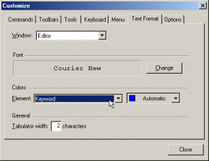

TeXnicCenter allows you to customize the font family, style and size
for the navigator bar, the output bar and the editor window. For the editor
window you can additionally customize the colors used for syntax highlighting.
To customize the text formats, open the dialog
Customization and select the
tab 'Text Format'.

The meanings of the controls are:
- 'Window'
-
Select the window for which you would like to change the text format.
Available window types are:
- 'Editor'
- The editor window used to edit the (La)TeX documents.
- 'Navigator'
- The window normally docked at the left side of the main window,
which displays the document structure.
- 'Output'
- The window normally docked at the bottom of the main window,
which displays the output generated by the (La)TeX compiler.
- 'Font'
- Displays an example of the currently selected font for the
selected window type.
- 'Change...'
-
Allows you to select the font family, style and size to use for
the selected window type.
If the current window type is 'Editor', only fonts
with a fixed width per character are available.
- 'Element' (only available for window type
'Editor')
-
Select the syntax element here to customize the color for.
The following elements are available:
- 'Selection Margin'
- The margin displayed at the left side of an editor window.
- 'Whitespaces'
- Invisible characters like space and tabulator.
- 'Background'
-
Background of the text.
Note: This will not change the whole background of
the editor window, only the areas, where text is placed.
To change the background of the editor window, change the
display properties of your Windows operating system.
- 'Normal Text'
- Normal text
- 'Background (selected)'
- Same as 'Background', but for selected text.
- 'Normal Text (selected)'
- Selected text
- 'Keyword'
- A (La)TeX keyword
- 'Comment'
- A (La)TeX comment
- 'Operator'
- A (La)TeX operator
- 'Text in \verbatim'
- Text inside a verbatim environment
- 'Normal text in equation ($$)'
- Text inside inline math mode.
- 'Keyword in equation ($$)'
- A (La)TeX keyword inside inline math mode.
- 'Pair bracket background'
- Background of pair bracket
- 'Pair bracket text'
- Pair bracket
- 'Bad bracket background'
- The background of bracket that have no pair.
- 'Bad bracket text'
- Bracket that have no pair.
- 'Current bracket background'
- The background of bracket at cursor position.
- 'Current bracket text'
- Bracket at cursor position
- 'Pair block background'
- The background of text between bracket at cursor and its pair bracket
To disable the highlighting of pair bracket set the same color as "Background" and "Normal text" for
"Pair bracket background" and "Pair bracket text", respectively.
The same rule applies to "Bad bracket background" and "Bad bracket text",
"Current bracket background" and "Current bracket text", and "Pair block background".
- 'Color Picker' (only available for window type
'Editor')
- Choose the color for the selected element here. The color
'Automatic' is the default value for the selected element.
- 'Tabulator width' (only available for window type
'Editor')
- Specifies the width of a tabulator in characters.